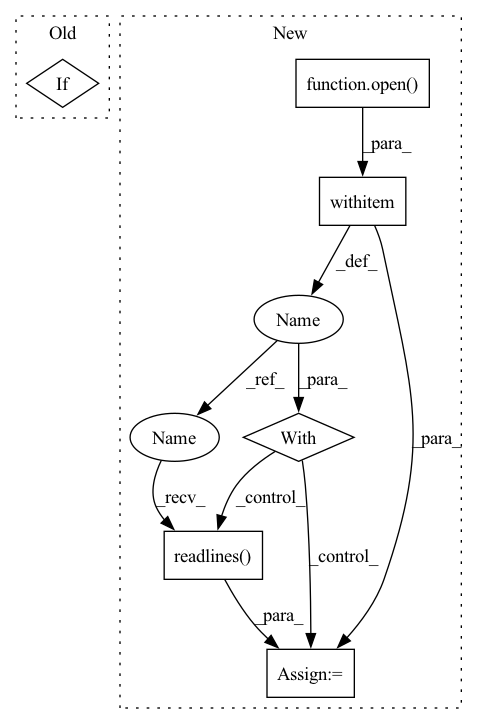

Pattern ID :13314
Before Change
// ls_laudo = ast.literal_eval(ls_laudo)
laudo = laudo.replace("\n", "")
ls_laudo = laudo.split(".")
if "" in ls_laudo:
ls_laudo.remove("")
phrase = random.choice(ls_laudo)
After Change
text_path = os.path.join(self.text_root_dir,
self.clr_frame.iloc[idx, self.text_col]
)
with open( text_path) as f:
content = f .readlines()
content = content.replace("\n", "")
ls_text = content.split(".")
if "" in ls_text:
ls_text.remove("")In pattern: SUPERPATTERN
Frequency: 3
Non-data size: 6
Instances Fragment ID: 45088269
Project Name: edreismd/convirt-pytorch
Commit Name: 972e2647b0394954fb22376021a5441bfcf6fe88
Time: 2021-01-18
Author: edu.pontes@gmail.com
File Name: dataloader/dataset.py
M Class Name: ClrDataset
N Class Name: ClrDataset
M Method Name: __getitem__(2)
N Method Name: __getitem__(2)
M Parent Class: Dataset
N Parent Class: Dataset
M File Name: dataloader/dataset.py
N File Name: dataloader/dataset.py
M Start Line: 49
M End Line: 63
N Start Line: 46
N End Line: 78
Before Change
path = os.path.join(root, fname)
images.append(path)
if write_cache:
filelist_cache = os.path.join(dir, "files.list")
with open(filelist_cache, "w") as f:
for path in images:After Change
images = []
if meta_path is not None:
with open( meta_path, "r") as f:
lines = f.readlines()
from tqdm import tqdm
for line in tqdm(lines):
line = line.strip()
if len(line) > 0 and is_image_file(line): Fragment ID: 45088267
Project Name: mit-han-lab/gan-compression
Commit Name: 788f6907d955559d0539fc54acea0e0102e4a6eb
Time: 2021-01-11
Author: lmxyy1999@foxmail.com
File Name: data/image_folder.py
M Class Name: AnonimousClass
N Class Name: AnonimousClass
M Method Name: make_dataset(5)
N Method Name: make_dataset(5)
M Parent Class:
N Parent Class:
M File Name: data/image_folder.py
N File Name: data/image_folder.py
M Start Line: 33
M End Line: 60
N Start Line: 33
N End Line: 55
Before Change
// ls_laudo = ast.literal_eval(ls_laudo)
laudo = laudo.replace("\n", "")
ls_laudo = laudo.split(".")
if "" in ls_laudo:
ls_laudo.remove("")
phrase = random.choice(ls_laudo)
After Change
text_path = os.path.join(self.text_root_dir,
self.clr_frame.iloc[idx, self.text_col]
)
with open( text_path) as f:
content = f.readlines()
content = content.replace("\n", "")
ls_text = content.split(".")
if "" in ls_text:
ls_text.remove("") Fragment ID: 45088272
Project Name: edureismd/convirt-pytorch
Commit Name: 972e2647b0394954fb22376021a5441bfcf6fe88
Time: 2021-01-18
Author: edu.pontes@gmail.com
File Name: dataloader/dataset.py
M Class Name: ClrDataset
N Class Name: ClrDataset
M Method Name: __getitem__(2)
N Method Name: __getitem__(2)
M Parent Class: Dataset
N Parent Class: Dataset
M File Name: dataloader/dataset.py
N File Name: dataloader/dataset.py
M Start Line: 49
M End Line: 63
N Start Line: 46
N End Line: 78